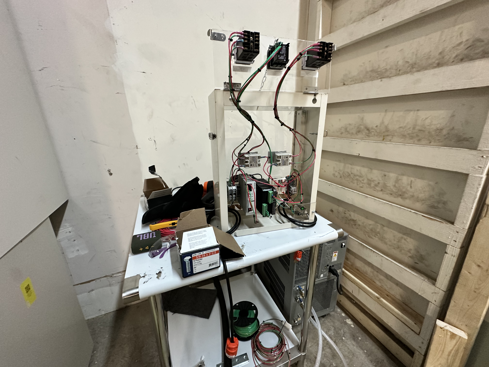
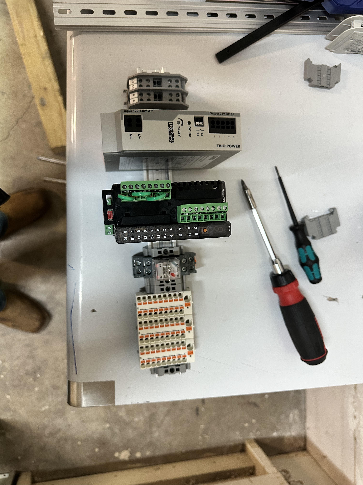
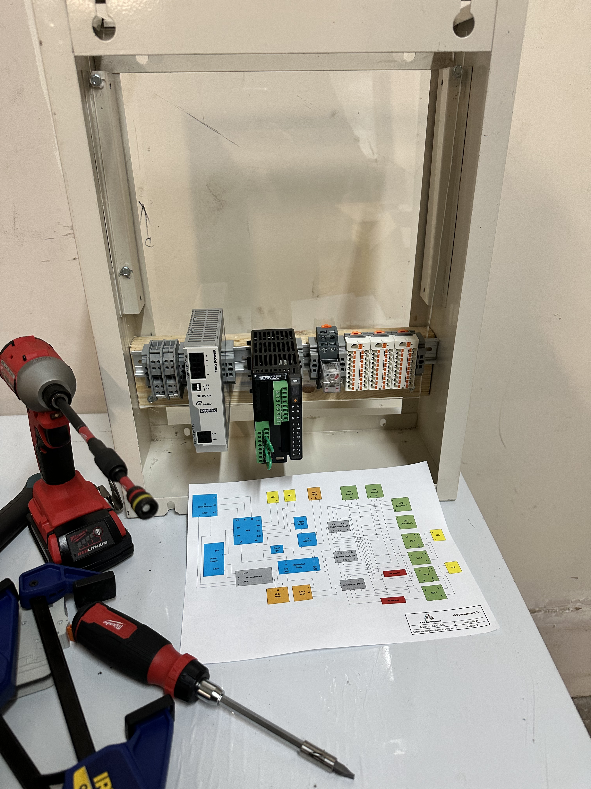

Electronic Control Box
Development of the central electrical control enclosure for a newly built reactor laboratory, integrating heater power, gas-flow control, feed pumps, temperature control, and a global safety shutdown system.
Building a new laboratory from an empty space
When I joined the lab, the space was essentially empty and the operating systems had to be built from the ground up. An existing laboratory on the other side of the facility provided a useful reference, but the chemistry and process requirements for this lab were different.
The control system therefore could not simply be copied. The existing approach had to be adapted, updated, and integrated around the equipment and safeguards required for the new reactor setup.

Centralized power and control for the reactor system
The electronic control box serves as the central interface for several critical reactor-system components. It provides power and control for the reactor heaters, mass flow controllers used for gas delivery, and pumps used to move feedstock into the reactors.
Temperature feedback from the reactor is tied into the control system through thermocouples, an RMS module, relays, and PID controllers so the operating equipment can respond to process temperature.


Adding hinged access to the control panel
During the build, I added a hinged mounting arrangement for the PID/control panel. The reference design did not provide the same level of rear access, which made wiring, troubleshooting, and future maintenance more difficult.
The hinged panel allows the controls to swing outward so the rear terminals, wiring, and connected components can be reached without having to remove the entire assembly. This made the enclosure easier to build and created a more serviceable design for future repairs or modifications.
Independent process control and high-temperature shutdown
Each reactor uses two temperature measurements with different purposes. One thermocouple is positioned directly against the reactor and provides the temperature signal used by the PID control loop.
A second thermocouple is positioned within the insulation as an independent safety measurement. If that safety thermocouple reaches its configured limit, the shutdown circuit removes operation from the connected system components.

Adapting an existing concept to a different process
The project required using an existing laboratory as a reference while reworking the implementation for a different chemistry and operating process. My role included building out the new laboratory system, integrating the electrical controls with the reactor equipment, and incorporating the temperature-based shutdown strategy into the control architecture.
Electrical component layout and connections
The electrical component diagram documents the control-box hardware and connections that support the laboratory reactor system. The diagram is displayed directly below and can be opened full size.

The related reactor piping and instrumentation diagram is documented in the Independent Dual-Reactor System case study ↗.